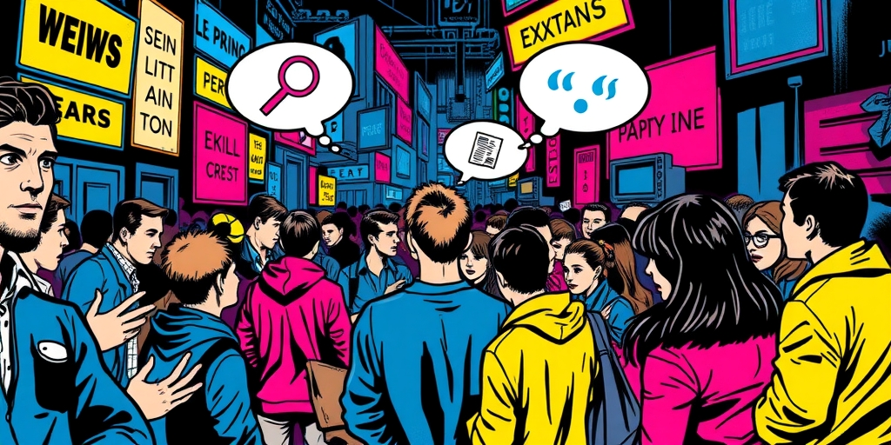
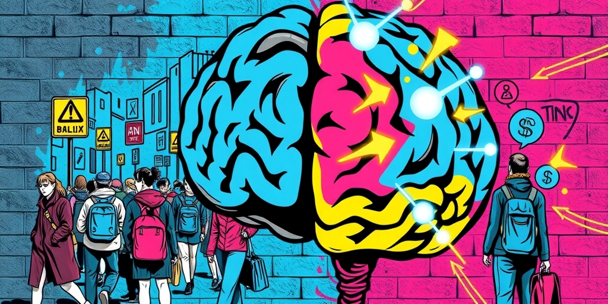
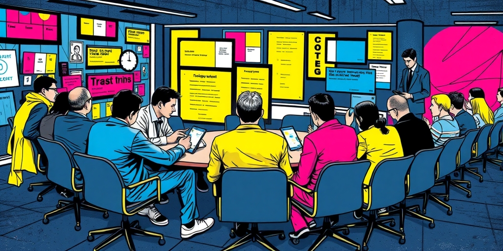

小汪老师的成长洞察 · 属于你的成长专栏
你分享升职的喜悦，对方笑着恭喜，却在心里盘算着你的薪水。你谈论近期的压力，对方频频点头，眼睛却亮得像找到了追更的连续剧。我们以为的深度交流，常常只是别人茶余饭后的素材收集现场。

饭局上，总有人主动坐到你身边，热络地询问近况。“最近忙什么呢？”“听说你买房了？”“孩子上哪个学校了？”问题一个接一个，语气真诚，眼神关切。你被这突如其来的温暖打动，开始倾诉工作的烦恼、家庭的琐碎、经济的压力。
直到你偶然间，在另一个场合，听到自己故事的另一个版本。那些细节被添油加醋，那些困境成了别人嘴里“果然如此”的笑料。你才恍然大悟，那份关心的温度，从一开始，目标就不是你本人，而是你生活里那些可供咀嚼的“料”。心理学研究早已揭示，人类大脑对负面、异常、私密的信息有着天然的高敏感度。这无关道德，是远古时期需要警惕危险、收集部落情报的生存本能残留。当有人围着你嘘寒问暖，他内心的信息处理器，可能正在高速运转，分类归档你的“可用素材”。

为什么我们的耳朵总是对八卦、糗事、矛盾和失败更竖起来？这不是简单的“人性本恶”。从进化心理学看，负面信息意味着潜在的风险和教训。知道谁家破产了、谁家吵架了、谁被骗了，相当于免费获取了一份社会生存风险报告。你的大脑在暗处替你权衡：记住这些，或许能让我避开类似的坑。
于是，在社交场上，一个平淡无奇的成功故事，远不如一个充满波折的失败经历吸引人。前者让人觉得遥远，后者让人觉得“安全”，甚至能带来一丝隐秘的优越感。所以，当你分享好消息时，收获的可能是礼节性的掌声；当你吐露烦心事时，周围却可能瞬间竖起一片看不见的耳朵。这不是你交友不慎，而是你触发了听者大脑深处那个古老的信息筛选器。他们不是不关心你，只是大脑优先处理了它认为“更有用”的部分。

办公室是最典型的“关怀密集区”。前辈的提携、同事的寒暄，往往包裹着信息的探针。“这个项目你拿了多少奖金？”“领导单独找你谈什么了？”“你觉得新来的那个同事怎么样？”这些问题像温柔的刀，剖开你职业生活的防御，把里面的薪资、人际关系、领导评价一一暴露在公共视野。
分享这些信息的风险极高。一句关于薪酬的抱怨，可能在一周后变成全公司“他嫌钱少”的共识；一句对某项目的质疑，可能演变为“他不认同公司战略”的标签。更微妙的是，当你发现自己的隐私成为公开谈资，你会本能地收缩。你开始对真正的关心也产生怀疑，对善意的帮助也打上问号。这种不信任感，最终会冷却整个团队的协作温度。我们亲手用八卦，建造了一座人人自危的孤岛。
完全封闭自己不是答案。人需要倾诉，需要连接。关键在于，识别谁是真正的“接收者”，谁是“采集者”。真正关心你的人，会在你沉默时给你空间，在你痛苦时提供支持而非追问细节，在分享你的喜悦后能长久地为你感到高兴。他们的注意力，指向你的情绪和需求本身。
而“采集者”的关心，总是伴随着后续的索取。他们需要更多的细节来丰富故事，需要你的困境来佐证自己的判断，需要你的秘密来换取其他圈子的入场券。学会辨别这种差异，是成年人社交的必修课。保护你的表达欲，意味着把珍贵的真心话，留给那些不会把它当作筹码的人。把故事讲给对的人听，你的倾诉才不会变成他人口中一道变了味的菜。
写给你的话
下次当你准备分享一件重要的事情时，可以做个小小的测试。不要急于说出全部，先观察对方追问的焦点。是更关心“你当时什么感受”，还是更执着于“具体怎么发生的”“涉及到谁”。前者在靠近你，后者在靠近信息本身。你的故事很贵，别轻易贱卖了。
参考资料
[1] Psychology says most people only pretend to care about your life and are just looking for juicy gossip: Why bad news is more interesting for them (The Economic Times) https://economictimes.indiatimes.com/news/international/us/psychology-says-most-people-only-pretend-to-care-about-your-life-and-are-just-looking-for-juicy-gossip-why-bad-news-is-more-interesting-for-them/articleshow/131515692.cms
[2] Psychology Says This Quiet Trait Is A Sign Of High Emotional Intelligence (Times Now) https://www.timesnownews.com/lifestyle/relationships/psychology-says-this-quiet-trait-is-a-sign-of-high-emotional-intelligence-article-154467022
小汪老师的成长洞察 · 属于你的成长专栏